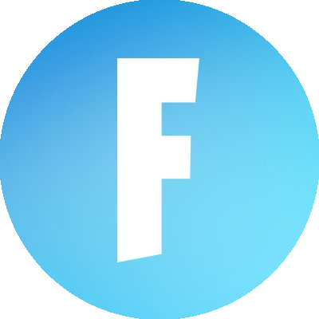

FORTNITE
LES DÉTAILS DE LA COMPÉTITION FORTNITE
depuis février 2019 Fortnite organise des compétition pour départager les meilleur jouer du jeu
FNCS 2023 est la dix-septième saison de la Fortnite Champion Series. Cette saison introduit les changements les plus massifs apportés au système FNCS à ce jour avec un format mis à jour. 3 divisions - Major 1, Major 2, Major 3 - chacune comportant 3 événements hebdomadaires menant à un tournoi majeur. Lors de ses tournois majeurs, les meilleurs joueurs de chaque régions se qualifient pour un tournoi international qui déterminera les champions du monde de cette année. Entrons maintenant dans les détails de cette compétition qui est à la fois la plus facile d'accès car elle ne demande pas de faire partie d'une structure mais la plus sélective car seuls les 100 meilleur joueur du monde accèdent a la final
LES QUALIFICATIONS
Les qualifications à la finale se déroule par région il y en a 7 au total parmi lesquelles les 50 meilleur duo de la région s'affronte dans 3 Majors
MAJORS 1
dans ce premier major il y a 50 duo par semaine qui s'affronte pour gagné des point de série. Il y a au total 3 semaine donc 150 duo. les points sont attribué en fonction des performances et des kills effectué par le duo pendant un total de 6 partie
A la fin de ces 3 semaines les 50 duo ayant gagné le plus de points s'affronte dans la grande final du major pour remporté leur place pour la final des FNCS lors du premier majors il y a 2 places pour la final à remporter
MAJORS 2
Le fonctionnement est le même que pour le premier major a la différence que il y a cette fois en Europe 5 place a remporté pour la final de plus les duo déjà qualifié peuvent toujours participé afin d'être dans les meilleur conditions possible lors de la Final si un duo déjà qualifié se retrouve assez haut pour a nouveau remporté une place c'est le duo non qualifié le mieux classé qui prend la place
MAJORS 3
Le fonctionnement est le même que pour les deux premiers majors a la différence que il y a cette fois en Europe 10 places a remporté pour la final tout comme lors du 2eme major les duo déjà qualifié peuvent toujours participé afin d'être dans les meilleur conditions possible lors de la Final si un duo déjà qualifié se retrouve assez haut pour a nouveau remporté une place c'est le duo non qualifié le mieux classé qui prend la place
LCM
Pour finir il reste après ces 3 majors une dernière chance au Last Chance Qualifier il se déroule sur qualification ouverte les 250 duo sélectionnées monte en semi-finals d'où sort un top 50 qui s'affronte dans une final avec 9 place a récupéré pour la Final FNCS
LE TOURNOIS FNCS
UPPER BRACKET
Il a eu lieu le 13 octobre il regroupe les 50 meilleur duo du monde (regroupement des meilleur duo par région) ils s'affronte sur 5 matchs ensuite les 25 Equipes ayant marquées le plus de point monte a la dernière étapes du tournois et les autres décendent en lower braket
LOWER BRCKET
ce dernier regroupe donc les 25 moins bon du upper bracket et les 25 duo qualifié au last chance majors il a lieu le lendemain du upper bracket dans celui si les 25 meilleur duo passe dans la dernière étapes et les 25 autres sont définitivement éliminés de la compétition il a également lieu en 5 match et est noté de la même façon
GRANDE FINALE
et enfin on fini avec la grande final c'est jusqu'ici qu'a réussi a se hissé notre duo favoris des GentleMates (score final top 27) cette finale a lieu le lendemain du lower bracket donc le 15 octobre 25 duos d’Upper Bracket et 25 de Lower Bracket participent à ce tournoi qui se déroule en 6 match toujours noté de la même façon et le classement final permet de titré le duo champion du monde qui remporte 1 millions d'euros cette année l'américain Cooper et le canadien Mero on gagnés ce titre
Pour avoir un résumé en vidéo du fonctionnement des FNCS voici une vidéo faites par l'équipe Gentle Mates.